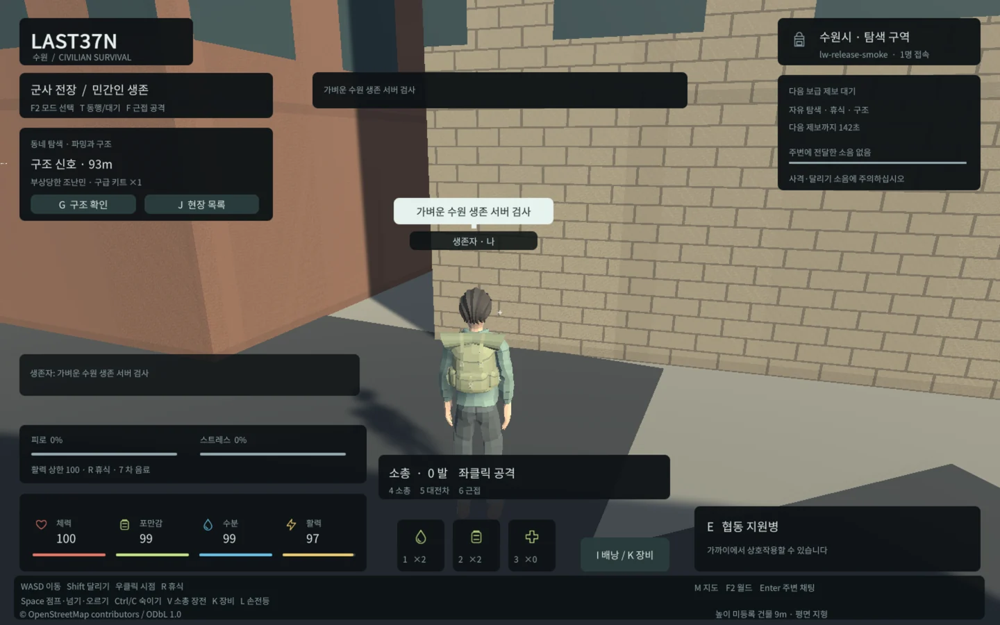

Tracefolio REPORTS & ISSUES
Tracefolio REPORTS & ISSUESLAST37N 전체 개발 종합: 구현 범위·구조·개선 수치·미구현 항목
완료수원 Unity 웹 생존 게임의 전체 기능·서버 구조·실행 검증과 공개 서비스까지 남은 범위를 종합했습니다.
작업 결과
현재 단계는 실제 로컬 플레이 가능한 멀티플레이 생존·군사/좀비·구조 통합 프로토타입입니다. 최초 요청의 기본 생존/수색/NPC/저장/멀티 기능을 구현했고 전투·협동·구조·장비·도시 외형을 확장했습니다. 상용 출시나 공개 서비스 완료는 아닙니다. 전체 기능의 가중치와 출시 기준이 합의되지 않아 전체 완성도 백분율은 산정하지 않습니다.
변경 내용
적용 내용
실제 구현 범위
| 분야 | 개발된 내용 | 범위와 한계 |
|---|---|---|
| 실행 기반 | Unity6000.0.83f1 TPS, WebGL 기본·Windows 빌드 | 로컬 실행용 프로토타입 |
| 수원 월드 | 실제 OSM 건물37308개·도로15722개·물가/제한96개·다리610구간, 주변 청크 로딩 | 평면 지형, 미등록 건물 높이9m 임시값 |
| 도시 표현 | 팔달문·장안문·화서문, 전통 건물·성곽·녹지·도로, 반파 건물·불꽃·연기 | 건물 내부 진입·화재 피해 없음 |
| 생존·파밍 | 체력·허기·갈증·활력·피로·스트레스, 식수·식량·치료·휴식,18개 동네 수색 지점 | 수치·경제는 임시 균형 설정, 비접속 감소 기본 비활성 |
| NPC·안전 | 경비병·상인·의무병·생존자, 구매·판매·치료·대화, 중립 구호소 | 경계 터렛은 감지·회전만, 발사 피해 없음 |
| 구조 | 월드당3개 선택 이벤트, 물자 지원→호위→구호소 인계→보상, 위험 시 대기·재개 | 플레이어당1명 호위, 구조 NPC 사망·고급 경로 탐색 없음 |
| 군사 전투 | 보병4·돌격병2·적 전차1, 소총·대전차·근접, 탄약·사선·피해·회복·재등장 | 전차 탑승·차량 물리·PvP 없음 |
| 좀비·협동 | 별도 좀비 월드10명, 가상 소음 조사·숙임 감지 감소, 아군2명 동행·대기·지원 사격 | 단순 표적 선택·장애물 회피, 완전한 전술 AI 없음 |
| 장비·행동 | 군복·헬멧·조끼·가방·손전등 등12종, 점프·숙이기·넘기·오르기·장전,10개 추가 동작 클립 | 지정 방벽/발판만 등반, 전 건물 자유 등반 아님 |
| 멀티·사회 | 월드별100접속 제한·상태 격리·이름표·말풍선·한글 채팅·재접속 | 로컬 세션 토큰, 공개 계정 인증 없음 |
| 저장·안전성 | PostgreSQL/PostGIS 트랜잭션·거리 재검증·중복 영수증·롤백·재시작 복구 | 여러 서버가 같은 월드를 동시 운영하는 구성 미지원 |
어떻게 개발했는가
최초 React/MapLibre 제안에서 사용자 요청에 맞춰 Unity TPS를 실제 표현 클라이언트로 사용했습니다. Unity는 입력·카메라·애니메이션·HUD·도시 표현을 맡고, Node24/TypeScript 서버가 이동·아이템·거래·전투·구조 결과를 결정합니다. PostgreSQL17/PostGIS3.6은 월드·캐릭터·명령 영수증을 저장합니다. 웹은 JavaScript WebSocket 브리지, Windows는 네이티브 전송을 사용합니다.
기본 TPS/지리/저장→웹 경량화→군사·좀비·협동→구조·사회·장비·행동→도시 외형→전송·렌더·배포 최적화 순서로 확장했습니다. 캐릭터는 CC0 Quaternius 모듈과 공용 리그를 재사용했고 Blender 원본·FBX·생성 스크립트를 보존했습니다. 게임 수치는 JSON 설정으로 분리했습니다. 마지막 경량화에서는 새 대형 자산 없이 기존 표현과 규칙을 재사용했습니다.

측정된 개선
| 지표 | 이전→현재 | 측정 범위 |
|---|---|---|
| 초기 게임 파일 | 11095729→6746062bytes,39.20% 감소 | 마지막 경량화의 불변 출발 기준 대비 |
| 전체 런타임 패키지 | 11097504→6747936bytes,39.19% 감소 | 실제5파일, 지도·실시간 통신 별도 |
| 상태 전송 | 전체 상태 환산3909701567→차분 전송737344714bytes,81.14% 감소 | 동일 최종100WS 부하 내 상태 바이트 대조, 전체 인터넷 비용 아님 |
| 렌더 표본 | 평균19.35→52.99FPS, draw7236→약1776 | 동일100명 장면, 실제 Unity1개+99WS,1440×900·GTX970 |
| Unity 추적 할당 | 114694584→81624787bytes | 동일 렌더 표본, 전체 브라우저/GPU 메모리 아님 |
| 캐시 재실행 | 게임4파일 냉전송6747146→웜0bytes | 같은 브라우저 컨텍스트·헤더 포함, HTML/지도/WS 제외 |
용량 개선은 Brotli·엔진 축소·미사용 리소스 정리·애니메이션 데이터 축소로, 전송 개선은 월드별 상태 차분과 전체 상태 복구 경로로 구현했습니다. 렌더는 공유 재질 팔레트·원거리 LOD·원격 애니메이션/그림자 제한·캐시 재사용으로 줄였습니다. 원본 캐릭터는 근거리에서 유지하며252개 실루엣 최저IoU0.981441과 원본 복귀를 검증했습니다. 후보 생성→실제 실행 QA→정확한 지문 적용을 분리하고 마지막 승인본보다1바이트 큰 빌드는 거부합니다.
검증
무엇을 실제로 검증했는가
직전 마무리 작업에서 서버122개·배포17개·실제 Web13개·TypeScript를 재실행해 통과했습니다. 아카이브37개 검사도 통과했습니다. 기존 전체 기능 회귀는 Web 행동14·장비9·구조/생존/사회20·도시10·현장14·차분복구6·전투/협동14 및 Native 본/행동23개를 기록했습니다. 서로 다른 검사 묶음이므로 중복 없는 총 테스트 수로 합산하지 않습니다.
실제100WS/약92초 부하는80명 이동·9900명령·10명 재접속·900응답·오류/미처리0·응답p95 65.56ms입니다. 별도1시간 반복 시험은3610314ms·201회 반복·67재접속·오류0, 세 월드의 재질/메시 수 유지입니다.100개 Unity 화면의 동시 렌더 시험은 아닙니다.
한글 입력 손상, 애니메이션 리그 바인딩 차이, 빠른 HUD 클릭 뒤 오발, 월드 전환 재질 누적, 잘못된 실루엣 QA 프레이밍은 실제 실패를 보존하고 수정 후 재검증했습니다. 현재 적용 지문은8b10d061fca725d894c9659abea1a6e41982ea5f35c86dfe673b3b4b7d86bf87입니다.
이번 총보고 작업은 기존 실행 JSON·설정·문서·Git 이력을 대조한 검토입니다. 위 시험을 이번 총보고에서 모두 다시 실행했다는 의미는 아닙니다. 근거는 docs/qa/lightweight/final-handoff-qa.json, final-load/sustained-100.json, long-soak-live-package/result.json, final-public.json과 각 기능 문서입니다. README/ARCHITECTURE/IMPLEMENTATION_STATE의 초기 “전투 후속” 문장은 이후 COMBAT 문서·현재 combat.enabled 설정·실행 기록에 의해 갱신된 과거 범위입니다.
교훈 검토: 전역 지침 변경 없음. 날짜가 다른 기록의 적용 범위와 현재 설정을 구분했으며 새 일반 규칙을 만들지 않았습니다.
남은 사항
플레이어 간 거래·세력·공동 거점/창고·차량·다른 도시·공개 계정 인증·HTTPS 게임 호스팅·여러 서버의 월드 운영은 미구현입니다. 건물 내부/자유 등반·고급 전술/장거리 경로 탐색·터렛 사격·화재 피해·수통 충전/정수도 없습니다. 모바일/저사양/100대Unity 동시 렌더·장기 인터넷 운영·경제 밸런스는 미검증 또는 추가 조정 대상입니다. 다음 단계는 목표 기기에서 실제 플레이와 조작/UI 검증, 공개 운영 인증·호스팅·저장/운영 정책, 이후 콘텐츠/밸런스 확장 순서가 적절합니다. 현재 실행 주소는 http://127.0.0.1:8788/이며 외부 공개된 것은 결과 아카이브입니다.
작업 시간
- 제안 시간: 이번 총보고 검토·작성·HTML 전달3~5분. 시작2026-10-31 11:59:57 KST.
- 실제로 완료된 시간: 총보고 내용 대조/생성 2026-10-31 12:00:55 KST. 최초 개발 시작2026-10-30 18:17:30
최종 전달2026-10-31 11:53:23 KST까지 경과17시간35분53초이며 중간 대기·세션 중단을 포함합니다. 순수 작업 시간 총합은 확인되지 않아 산정하지 않습니다. 마지막6시간 예산(05:16:0111:16:01)은 초과했습니다. 이번 총보고 공개 전달 완료 시각은 별도 QA 기록입니다. - XERJ: 미사용 — 도구 목록에 XERJ 미제공. 현재 설정·문서·실행 JSON·Git 이력을 직접 대조하고 rg로 현재 소스 심볼을 확인했습니다.